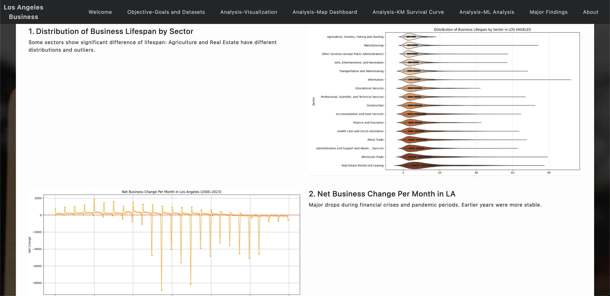
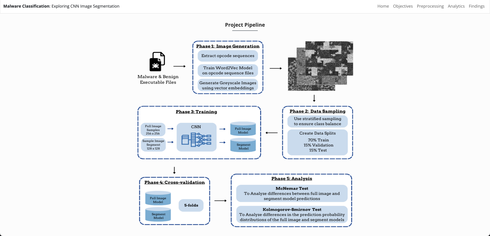

CS 163 Project Archive (Spring 2025)
Top Three Student-Selected Projects

Group 2: Value Voyáge: A Journey Through Decades of Prices
by Max Dokukin and Ryan Fernald

Group 8: Business Survival Analysis: A Business Advisory for New Business Owners
by Ruxin Xie and Eric Zhao

Group 20: Optimizing Malware Classification: Parallelized CNN Training on Image Segments for Computational Efficiency
by Nicole Witt
Project Archive
Group 1: Analysis of Traffic Accidents in the US
Group 3: Cancer Classification using Hidden Markov Model and Gene Expression
Group 4: Analysis of Infrastructure Projects
Group 6: California 2024 Presidential Election Analysis
Group 7: Electric Vehicles and Sustainability: What’s Really Affecting Our Air?
Group 9: Smoke Signals: Time Series Forecasting of PM2.5 Amid California Wildfires
Group 10: California Wildfire Severity Prediction
Group 11: Finding the Best Pokémon
Group 12: Semiconductor Material Optimization
Group 13: EV Growth and Its Effect on Energy Demand
Group 14: Analysis of Ulta Beauty
Group 15: Predictive Market Analysis and Personalized Recommendations for Tech Startups in San Jose
Group 16: Understanding Changes in Socioeconomic Classes Over Time
Group 17: Optimizing Ad Impact